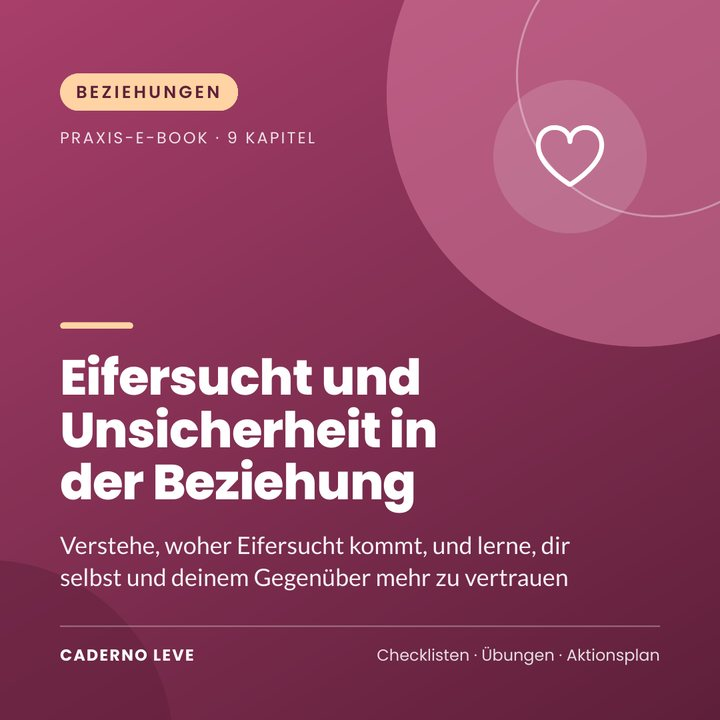

Eifersucht und Unsicherheit in der Beziehung
Verstehe, woher Eifersucht kommt, und lerne, dir selbst und deinem Gegenüber mehr zu vertrauen: gewöhnliche oder besitzergreifende Eifersucht, Wurzeln, Gedanken, Kontrollzwang, Ruhe-Set und Gespräch.
Dieses E-Book ist in Kürze erhältlich.
Sichere Zahlung und PDF-Auslieferung über Kiwify
Preis in brasilianischen Real (BRL). Beim Bezahlen siehst du den Betrag in deiner Währung.
Reicht eine unbeantwortete Nachricht, damit dein Kopf Geschichten erfindet? Du kannst mit Eifersucht umgehen, ohne dein Gegenüber zu kontrollieren und ohne so sehr zu leiden.
Eifersucht und Unsicherheit in der Beziehung ist ein praktisches E-Book in einfacher Sprache für alle, die zu viel Eifersucht empfinden und ihre Beziehung mit mehr Vertrauen und Leichtigkeit leben möchten.
Du verstehst, was Eifersucht ist, unterscheidest gewöhnliche von besitzergreifender Eifersucht, lernst ihre Wurzeln kennen (etwa Bindungsstile), hinterfragst Gedanken, reduzierst Kontrollen, stellst ein Ruhe-Set zusammen, lernst, mit Verletzlichkeit zu sprechen, und erkennst, wann Eifersucht zu Kontrolle geworden ist.
Das nimmst du mit
- Die Gefühle hinter der Eifersucht verstehen
- Gewöhnliche von besitzergreifender Eifersucht unterscheiden
- Gedanken hinterfragen, die Misstrauen nähren
- Den Kontrollkreislauf durchbrechen
- Über Unsicherheiten sprechen, ohne anzuklagen
- Selbstwert und Vertrauen stärken
Das steckt drin
- Kapitel 1Was Eifersucht ist
- Kapitel 2Gewöhnliche oder besitzergreifende Eifersucht
- Kapitel 3Die Wurzeln der Eifersucht
- Kapitel 4Gedanken, die Eifersucht nähren
- Kapitel 5Verhaltensweisen, die es schlimmer machen
- Kapitel 6Eifersucht im Moment beruhigen
- Kapitel 7Mit dem Partner oder der Partnerin sprechen
- Kapitel 8Vertrauen stärken
- Kapitel 9Wenn Eifersucht ein Warnzeichen ist
- ExtraZusammenfassung und Aktionsplan für die Umsetzung
- ExtraArbeitsblatt und Checkliste zum Ausdrucken
Für wen es ist
- Alle, die eifersüchtig sind und darunter leiden
- Alle, die aufhören wollen, ihr Gegenüber zu überwachen
- Paare, die besser über Unsicherheit sprechen möchten
Für wen es nicht ist
- Keine Therapie und keine Behandlung
- Kein Leitfaden für Gewaltsituationen (Hinweise auf Hilfsangebote sind enthalten)
Bonus: Eifersuchtsprotokoll zum Ausdrucken – Gedanken, Belege und aufgeschobene Kontrollen.
Wichtiger Hinweis
Dieses E-Book dient der Information und Selbstfürsorge. Es stellt keine Diagnose, ist keine Behandlung und ersetzt weder Psychotherapie noch ärztliche Betreuung. Wenn deine Belastung stark ist, lange anhält oder dein Leben beeinträchtigt, wende dich bitte an eine Psychotherapeutin, einen Psychotherapeuten oder deine Hausarztpraxis.
Wenn du jetzt mit jemandem sprechen möchtest, wende dich an eine Krisen- oder Seelsorge-Hotline in deinem Land. Im Notfall wähle die örtliche Notrufnummer.